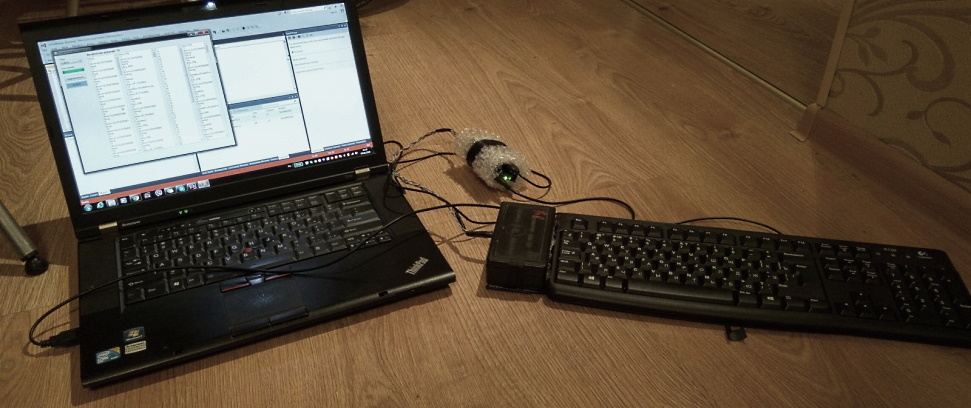
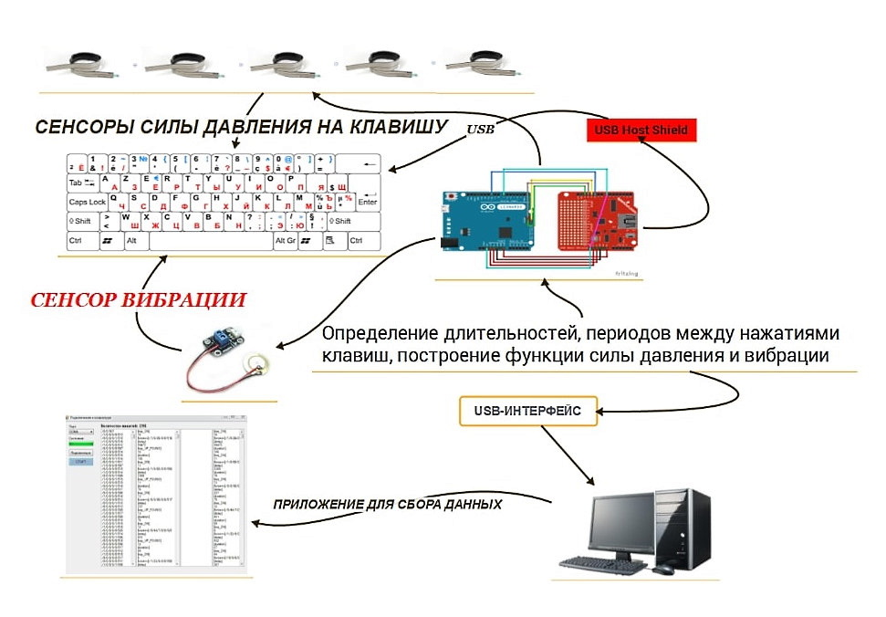

Биометрическая аутентификация пользователя по клавиатурному почерку с учетом силы нажатия на клавиши, параметров вибрации и движения рук
Проект на сайте aiconstructor.ru
- Прототип устройства для анализа клавиатурного почерка пользователя с применением дополнительного микроконтроллера и сенсоров
- Модификация не влияет на штатную работу клавиатуры, подключается к ПК через Arduino Leonardo
- Применен USB Host Shield модуль для имитации HID-клавиатуры в операционной системе и перехвата кодов клавиш
- Резистивные датчики давления регистрируют усилие нажатия на клавиши
- Пьезоэлемент непрерывно фиксирует вибрационные характеристики
- Рассчитываются временные периоды между нажатиями клавиш
- Определяются длительности удерживания клавиш и их коды
- Строится амплитудная функция вибрации
- Строятся функции усилия для каждого сенсора
- Обнаруживается одновременное нажатие нескольких клавиш
- Все данные (признаки) передаются в C# приложение посредством последовательного соединения с возможностью экспорта в XML-файлы


Описание
Публикации по проекту
Идентификационный потенциал клавиатурного почерка с учетом параметров вибрации и силы нажатия на клавиши / журнал "Прикладная информатика" - 2017
Распознавание пользователей компьютерных систем по клавиатурному почерку и дополнительным признакам с помощью специальных датчиков / журнал "Датчики и системы" - 2017